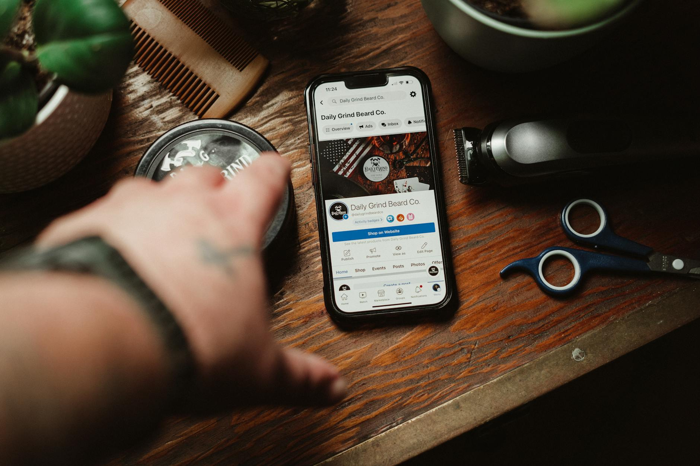

In 2026, 68% of small business owners say social media will drive more value than any other marketing channel (eMarketer, 2026). Most of them are still spending time on the wrong things.
Here's what the data shows, and what to do instead.
Facebook organic reach averages 1.65% per post; Instagram averages 3.5% (Sprout Social, 2026). Posting without a strategy wastes time on both. Facebook ads return $8.17 for every $1 spent for small businesses on average (XtendedView, 2026). Businesses with a complete Google Business Profile are 70% more likely to get location visits than those without one (Google, 2026).
Why Most Local Businesses Waste Time on Social Media
Only 55% of small businesses have a written social media strategy (Gitnux, 2023). The other 45% post when they remember, wonder why nothing happens, and either give up or keep going out of habit.
The problem isn't the platforms. It's the approach.
In 2026, Sprout Social found that organic reach on Facebook averages 1.65% of your followers per post. On Instagram it's about 3.5%. If you have 500 followers and post today, roughly 8 to 17 people see it. That's not nothing, but it's not growth.

Where to Put Your Time First: Google Business Profile
Before spending any time on Instagram or Facebook, make sure your Google Business Profile is complete and active.
In 2026, Google's own data shows businesses with complete profiles are 70% more likely to get location visits and 50% more likely to drive a conversion. Posts using real photos get 5.6x more clicks than stock images. That's a direct trade: your own photos, posted consistently, convert more customers who are already searching for you.
GBP posts reach people at the moment they're deciding where to go. Instagram reaches people who are scrolling. One has much better timing for a local business.
Post to GBP weekly. Use real job photos. Update your hours whenever they change. Respond to every review within 24 hours. That's the foundation.
Which Platform Is Worth It for Paid Social
If you're going to spend money, the numbers favor Facebook and Instagram over every other option for local businesses.
In 2026, XtendedView's analysis of small business ad performance found Facebook ads return an average of $8.17 for every $1 spent. Instagram returns $5.78 per $1. These are averages and results vary by industry, but both platforms let you target by zip code, age, and interest with precision that wasn't available five years ago.
Local Facebook ads also outperform national radius targeting for most small businesses. Running ads from your local business page builds more trust with neighbors than a national brand running ads into your area (Marvia, 2026).
Start with $5 to $10 per day. Run one ad at a time. Target a 5 to 10 mile radius. Give it two weeks before changing anything.
Organic Social: One Platform, One Format
Trying to post on four platforms is the fastest way to do a bad job on all four.
Pick one. Instagram if your work is visual — contractors, restaurants, retail, landscaping. Facebook if your customers skew 45 and older. Post three times a week. Use your own photos every time.
The content that gets shared: before and after photos, short explanations of how something works, honest answers to questions customers ask you every week. Stock images and branded graphics perform noticeably worse than real job site photos.
The 20-Minute Weekly Routine That Works
You don't need a content calendar, a social media manager, or a scheduling tool to start.
- Take two or three photos at every job this week.
- Post one photo to your Google Business Profile with a brief description of the work.
- Post one photo to your chosen social platform with a caption that explains what the job was and where it happened — city or neighborhood, not full address.
- Respond to any comments or messages within the same day.
That's it. Twenty minutes, spread across the week. Build the habit before you build the strategy.
Frequently Asked Questions
Do I need to be on TikTok?
Not yet, unless your customers are under 35. TikTok is growing fast, but Facebook and Instagram still reach more local buyers in most service categories. Add TikTok once you've built a consistent habit on one platform.
How often should I post?
Three times per week on one platform is better than once per day on three. Consistency on one channel builds a following; spreading thin builds nothing.
Should I run ads or focus on organic first?
Both, in sequence. Build the habit of posting real content first. Run ads when you have a specific offer or goal — more phone calls, more form fills. Don't run ads to a profile that hasn't posted in three weeks.
The businesses that do best on social media aren't the ones posting the most. They're the ones who picked a channel, show up with real photos, and put their Google Business Profile first.
Sources
- eMarketer, "Small businesses see social media as their clearest path to growth in 2026," retrieved 2026-05-29, emarketer.com
- Sprout Social, "Organic reach: What it is and how to improve it in 2026," retrieved 2026-05-29, sproutsocial.com
- XtendedView, "Social Media For Business Statistics 2026," retrieved 2026-05-29, xtendedview.com
- Gitnux, "Small Business Social Media Statistics: Market Data Report 2026," retrieved 2026-05-29, gitnux.org
- Google Business Profile performance data, 2026, business.google.com
- Marvia, "Local vs National Meta Ads: Which Performs Better? (2026)," retrieved 2026-05-29, getmarvia.com